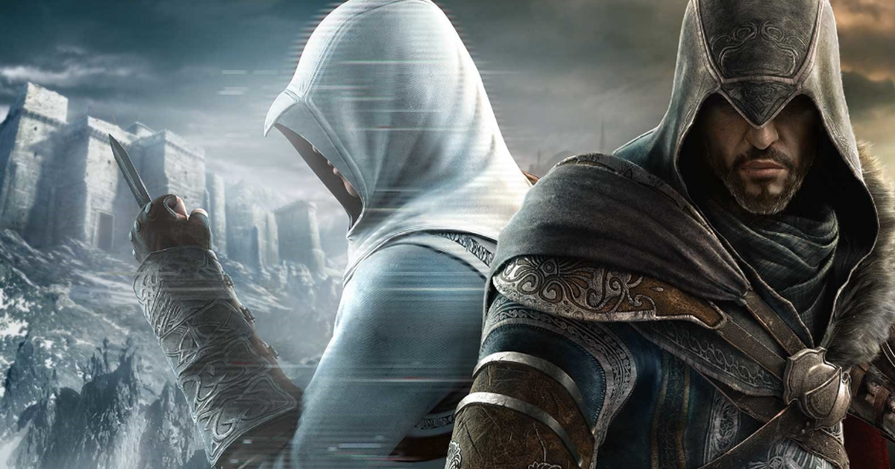
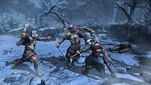

Assassin's Creed é uma série de jogos eletrônicos desenvolvida pela empresa Ubisoft.
A premissa central
da história envolve-se a partir da rivalidade entre duas sociedades secretas ancestrais: os Assassinos,
que desejam a paz através do livre arbítrio, e os Templários, que têm o objetivo de dominar o mundo e
impor a ordem na humanidade. Ambos tiveram uma relação indireta com uma espécie que viveu antes dos
humanos, cuja sociedade foi destruída por uma gigantesca tempestade solar. Misturando personagens e
ficção histórica com eventos e figuras reais, a ordem cronológica dos jogos começa em 2012, e fala de
Desmond Miles, um jovem que com a ajuda do Animus (uma máquina que permite ver as suas "memórias
ancestrais"), explora as memórias de alguns dos mais proeminentes Assassinos da história.
Retirando inspiração a partir do romance "Alamut", do escritor esloveno Vladimir Bartol, Assassin's
Creed começou como um spin-off da série Prince of Persia. O jogo original foi um esboço para Prince of
Persia: The Two Thrones, antes da equipe decidir fazer uma nova propriedade intelectual, incluindo
também um cenário no Médio Oriente, baseado no culto histórico de Assassinos Islâmicos ativos durante as
Cruzadas.
A série começou em 2007 com o lançamento de Assassin's Creed e os jogos já foram lançados para várias
plataformas incluindo PlayStation 3, PlayStation 4, Xbox 360, Xbox One, Microsoft Windows, Mac
OS X,
Nintendo DS, PlayStation Portable, PlayStation Vita, iOS, HP webOS, Android, Nokia, Symbian, Windows
Phone, Wii U, Google Stadia, Nintendo Switch, PlayStation 5 e Xbox Series X. Os jogos
principais foram
na sua maior parte produzidos pelo estúdio Ubisoft Montreal com a colaboração do Ubisoft Annecy para o
multijogador. Os portáteis foram produzidos pela Gameloft e Gryptonite Studios com trabalho adicional da
Ubisoft Montreal.
Para além dos jogos, a série foi adaptada para os mais variados tipos de mídias, tais como livros, banda
desenhada,[mais explicações necessárias] roupas, brinquedos e um filme.

Imagem da franquia de josgos Assassin's Creed
Jogabilidade

jogobilidade
A maior parte dos jogos se passa dentro do Animus, onde a interface do dispositivo exibe a saúde,
progresso, momento na história de seu ancestral, equipamentos e objetivos do jogador. Durante o uso do
Animus, o jogador deve manter o nível de sincronização com seu ancestral, evitando fazer uso de ações
que diminuem esse nível, como levar dano, matar pessoas inocentes e acessar áreas não disponíveis no
momento. Os objetivos do jogo geralmente consistem em assassinar algum alvo, infiltrar-se em locais
proibidos ou resgatar algum artefato perdido.
O jogador conta com vários recursos para realizar os assassinatos, como uma grande habilidade de
parkour, podendo escalar quase qualquer construção e um vasto arsenal, sendo a principal arma a lâmina
oculta, um dispositivo escondido no braço que saca uma lâmina e sutilmente assassina o inimigo. Mas o
jogo conta também com outras armas brancas e de fogo, além das habilidades de arremessar facas e fazer
uso de bombas. Mesmo com várias armas à disposição do jogador, o jogo encoraja o uso dos modos mais
sutis possíveis para assassinar os alvos, para que não chame muita atenção e evite que os guardas da
cidade comecem a caçá-lo. Para isso o jogo usa o conceito de movimentos passivos, que são sutis e
discretos, e movimentos ativos como correr pelas ruas, escalar construções e correr pelos telhados das
casas, que permitem velocidade, mas chamam muita atenção.
Duas habilidades-chave à disposição do jogador são o Salto de Fé, pelo qual o personagem pula
(praticamente se jogando) de lugares muito altos para se descer normalmente, caindo em lugares que
amortecem a queda, tais como carroças de feno, montes de folhas e na água; a Visão Aquilina, que permite
ao jogador distinguir aliados dos inimigos e alvos por meio do uso de cores, além de haver detalhes que
só podem ser vistos por meio desta habilidade. Ao longo do jogo, o personagem também conta com a ajuda
de várias facções, como outros assassinos, além de cortesãs, ladrões, mercenários e ciganas. Por fim, o
jogador deve libertar as cidades da influência dos templários, queimando estruturas que representam a
dominação dos templários na região e reconstruindo a parte dominada, restaurando construções como
ferrarias, alfaiatarias e pontos turísticos. No sexto jogo principal da série, Edward pode fazer uma
exploração submarina.
Protagonistas
Protagonistas de toda a série, em ordem cronológica de acordo com o período de tempo abordado nos jogos
que protagonizaram ou tema principal do enredo
Alexios e Kassandra de Esparta (irmãos) - Assassin's Creed Odyssey
(Grécia Antiga).
Canonicamente a protagonista é Kassandra, porém o Animus lhe pergunta se você quer jogar como
Kassandra ou Alexios. Isso ocorre porque, na trama do jogo, tanto o DNA de Kassandra como o de
Alexios foi encontrado numa lâmina antiga encontrada em um sítio arqueológico. A lâmina foi
usada em uma batalha entre os dois irmãos (que eram inimigos) e ficou manchada com o sangue dos
dois. Ao analisar a lâmina o Animus fica confuso com a presença do DNA de duas pessoas
aparentadas então lhe pergunta qual "avatar" o jogador quer utilizar. Porém as memórias
revividas são pertencentes a Kassandra.
Eivor Varinsdóttir - Assassin's Creed Valhalla
(Expansões vikings).
Canonicamente a personagem é uma mulher, porém devido ao alto nível de DNA de
Isu pertencente a Odin (ancestral de Eivor) encontrado no DNA de Eivor, o Animus, às vezes,
representa Eivor como um homem baseado na aparência real de Odin.
Ordem cronológica da história
Jogos por ano e plataforma
A negrito denota um título que faz parte da série principal
País(es) e Período histórico
Ano(s)
Título
Ano
Consoles
Computadores
Portáteis
Celular
Outros
Sultanato Terceira Cruzada
Assassin's Creed
PlayStation 3, Xbox 360
Windows
—
—
Xbox One
Chipre
Bloodlines
—
—
PlayStation Portable
—
—
Itália Renascentista
Assassin's Creed II
PlayStation 3, Xbox 360, PlayStation 4, Xbox One
OS X, Windows
PlayStation Portable
Symbian
OnLive
Espanha Renascentista
Brotherhood
PlayStation 3, Xbox 360, PlayStation 4, Xbox One
OS X, Windows
—
—
OnLive
Cidade de Bagdá
TBA
Mirage
PlayStation 4,PlayStation 5, Xbox One, Xbox Series X
Windows
—
—
—
Assassin’s Creed: a ordem cronológica da série completa
Eventos históricos; saiba a ordem cronológica da série completa de Assassin’s Creed e situe-se na
real
evolução social
A série de jogos Assassin’s Creed, ao contrário da violência do conflito entre os grupos do game
(assassinos e templários), mostra a evolução da sociedade humana como cenário dos jogos. Veja
abaixo, a ordem cronológica histórica da série completa de Assassin’s Creed, sem os spin-offs, veja
situações nas quais a “organização de assassinos” se envolve para manter o objetivo de combater a
“opressão”.